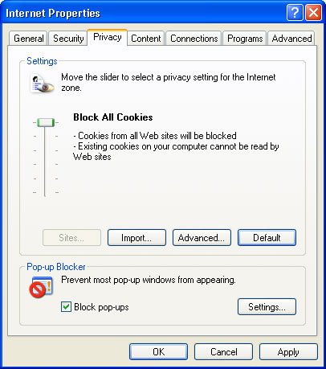
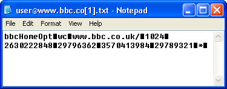
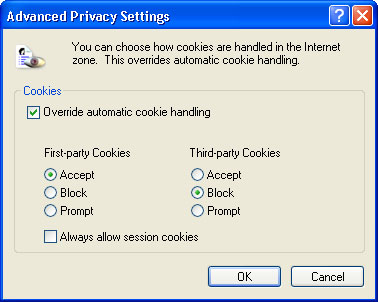
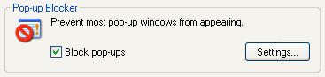
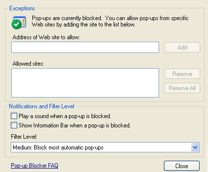
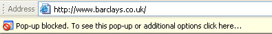
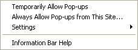

Free
computer Tutorials
|
Free
computer Tutorials
|
|
 home home |
Stay at Home and Learn | ||||
Internet Options - Privacy
For this tutorial, you'll need the Internet Options dialogue box. To see how to bring it up, click this page (opens in a new windows): How to bring up the Internet Options Dialogue Box
Another tab on the Internet Options dialogue box is Privacy. This allows you to choose your Cookie settings, and whether to allow popup windows. The Privacy tab looks like this:  Before you play around with the slider above, you need to know what Cookies are.
What is a Cookie?A Cookie is a small text file that a website places on your computer. It does this because web pages are not good at remembering things. If you select an option a form, and then go to another page on the same site, the next page won't know what you selected on the previous one. This is important if you do any online shopping, for example. If you order two things on two different pages, and then click the "Check Out" button on the second page, only one of them will be remembered - the one on the same page as the "Check Out" button. So that your choices can be remembered, a text file is placed on your
PC - a Cookie. This, in most cases, is just a record of what you selected
on a previous page. If you navigate to the following folder on your
hard drive, you'll be able to see the Cookies on your own computer: C:\Documents and Settings\user\Cookies Because they are only text files, you can double click to open them.
Here's what a Cookie looks like:  As you can see, this one is from the BBC website. The numbers won't mean anything except to the website which placed the information on the computer. But it could be anything: the 1024 above, for example, may be the width of your computer screen. You'd then be served up a page that suits your screen size. But it could very well mean the 24th day of the 10th month. This would then be the date that the Cookie is deleted from your PC! A reputable site will have a Cookie policy telling you why they use them, and what they do with any information stored. (We don't use Cookies at all, in case you're wondering!) The fuss about Cookies is that the website doesn't ask you - it just goes ahead and places itself on your PC. This raised quite a few security scares because people didn't know exactly what these things did. Plus, a Cookie can be used to store personal information about you that a web site gathers when you visit it. If you're worried about Cookies, then you can change the settings from the Internet Options Privacy tab. In our first image, we had the slider at the top - this will block all Cookies from the computer. If a web site we trusted, and needed to use, was asking to place a Cookie on the PC, then we could easily put the slider down to low. If you click the Advanced button just below the Cookie slider, you see more option:  If you place a tick in the box "Override automatic cookie handling" then the rest of the options become available. A first-party Cookie is one that comes from the website you're visiting. A third-party Cookie is one that comes from somewhere else. This could be from an advertising banner on the page, for example, which will then dump its own information onto your PC. A session is the time you spend on the internet with one browser window open. When you close the browser down, the session will end. If you have a tick in the box "Always allow session cookies", then any Cookie that a website placed on your computer will be deleted when the session ends. The settings in the image above, incidentally, are not a recommendation for you to select the same options. In fact, we'd recommend that you uncheck the box "Override automatic cookie handling", and then set your slider to Block all Cookies. If a web site you know and like is complaining that you need to enable Cookies in your browser, then simply move your slider back down.
Block Popup windowsAlso on the Privacy tab is an area for pop up windows. Most of these
are just annoying adverts that you close down straight away. But a few
can be malicious, launching harmful scripts in the background, or trying
to get Spyware onto your PC. If you want to block all pop up windows,
put a tick in the box:  When a tick is in the "Block pop-ups" box, the Settings button becomes available. Click the button to see the following:  If you prevent all pop ups then things like a banking site, which may launch in a separate window, won't be available. You can add a site you trust to the list of Allowed sites. Just type the address in the first text box, and click the Add button. In the "Notifications and Filter Level area", you'll notice
a tick box that says "Show Information Bar when a pop-up is blocked".
The Information Bar looks like this: 
So Internet Explorer tells us that the Pop-up was blocked. Click the icon to see the additional options:  If you want to turn off the pop-up blocker, then select Settings from the menu above. You will get another menu allowing you to turn it off.
<--Back One Page Move on to the Next Part--> |
|||||
|